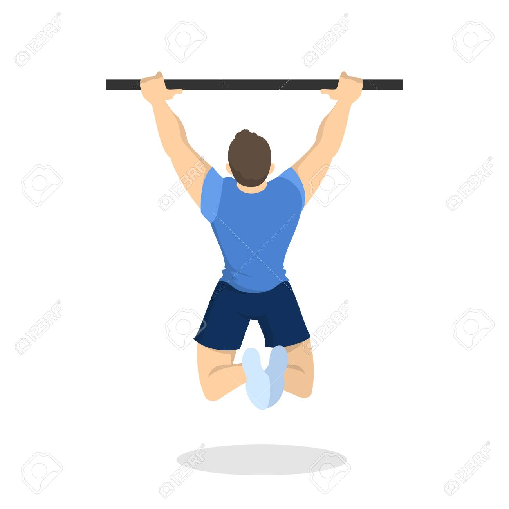
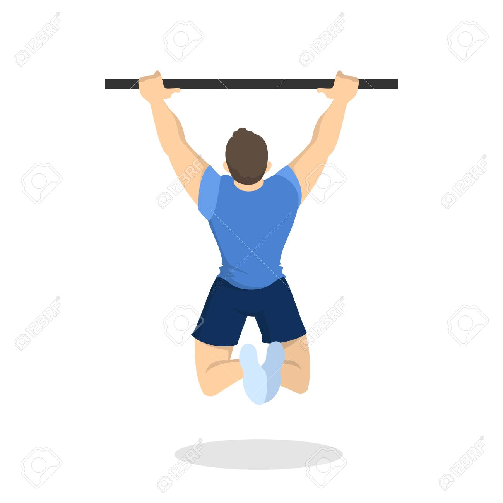
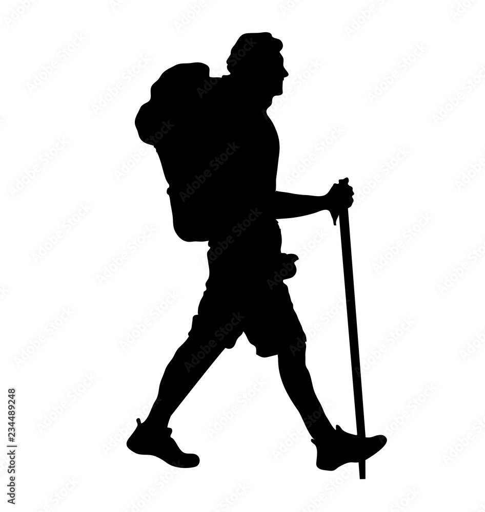
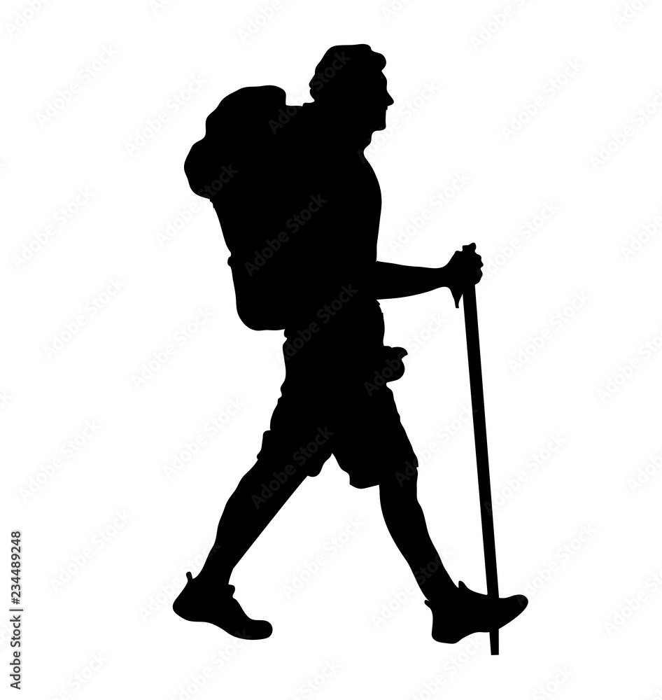

Welcome to my personal website! Feel free to take a look around. Its main purpose is to familiarize
myself with the fundamentals of web development and also to showcase some of the interesting projects
I have been working on. I am open to suggestions so do not hesitate to contact me.
The website is still under development so I apologize for any discrepancies. Below you can find a quick overview of the contents of each section.
I hope You enjoy Your time here!
In the About me section you can find some basic information such as my hobbies and interests.
The sections Education and Work are quite self-explanatory. The former captures
my academic journey while the latter enumerates my professional experience. The list of my academic and personal projects can be found
here along with their respective descriptions. The last section is devoted to my
Skills, describing their level as well as how and where I acquired them.
About me
My name is Matyáš Mattanelli and I am currently pursuing a Master's degree in Computer Science - Artificial Intelligence with a specialization in Machine Learning.
I hold a Bachelor's degree in Economics and Finance and a Master's degree in Economics and Finance with a specialization in Financial Markets and Data Analysis. My
studies of Economics provided me with a strong background in Mathematics, Statistics, Econometrics, and Data Analysis. During my Master studies I was introduced
to coding (firstly in R and later in Python) and subsequently to Machine Learning and I fell in love with both. I am currently improving my knowledge of Computer
Science in order to be able to pursue a carrer as a Data Scientist/Machine Learning Engineer.
Even though I spend a significant amount of time in front of my laptop either studying or coding up my personal projects, sports constitute a very important part
of my life. Apart from Jogging and Calisthenics, I am a competitive Ballroom Dancer. In case you are interested, the results of me and my partner's competitions are
available here. I like to
intertwine my passions and thus ballroom dancing has also been a vital part of my programming journey. Apart from several personal tools which I have developed to
track my competitive record, I also created a desktop application facilitating the organization of ballroom dancing competitions. You can read more about my projects
here. Whenever my busy schedule allows I also enjoy an occasional hike or a good book.
Random facts
Projects
The current section contains the description of some of the projects I have worked on over the years. If available, you can access the Github repository of the project by clicking at the associated picture.


 

 
